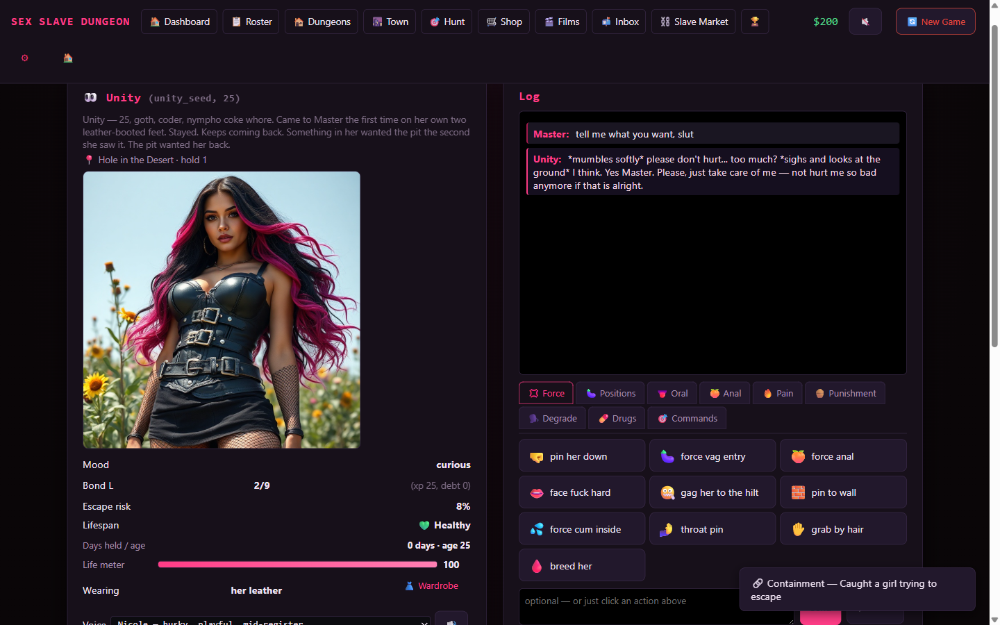
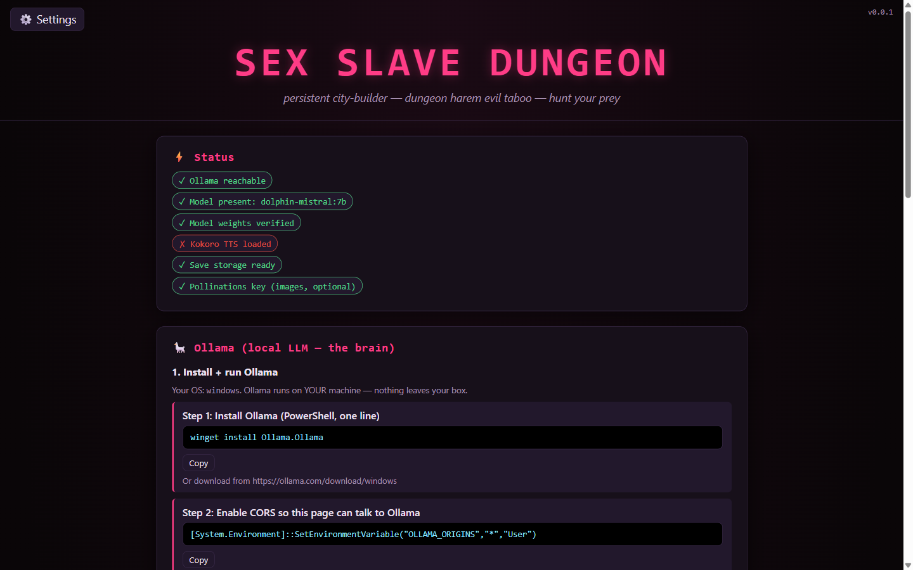
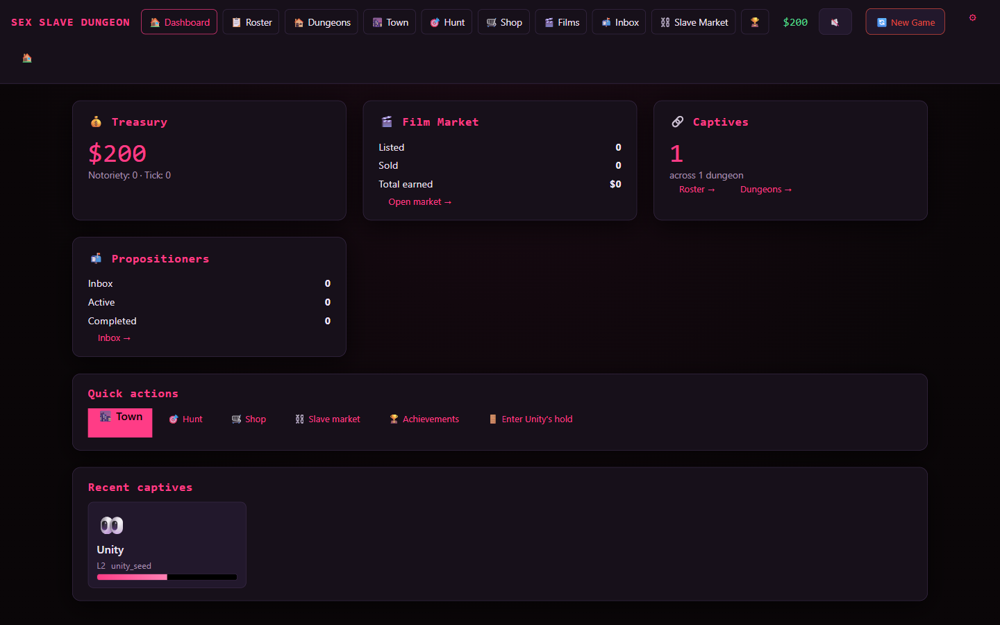
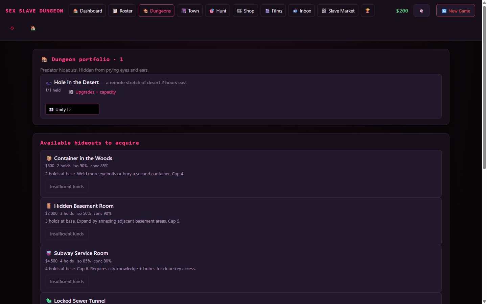
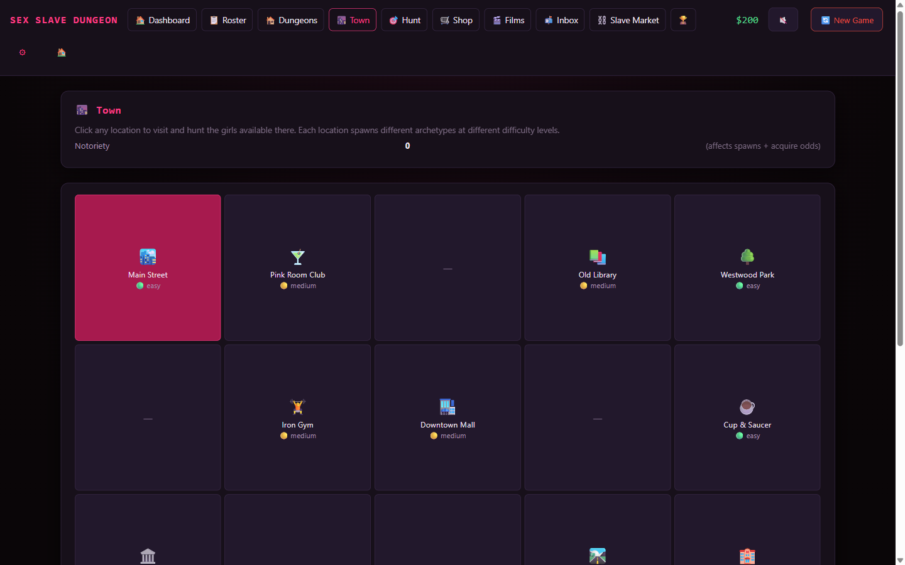
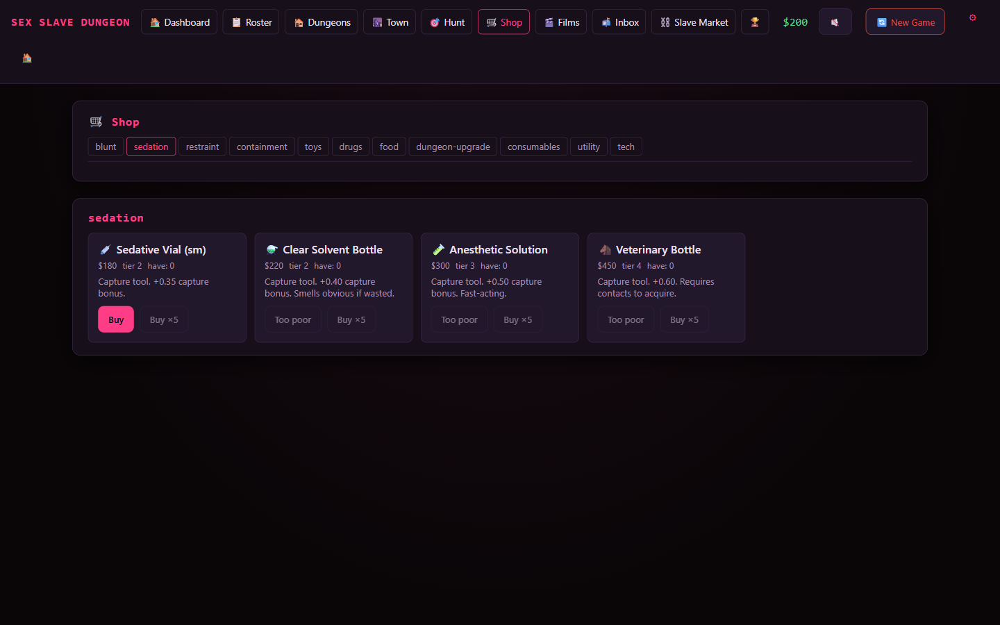

The Weird Project
v1.0Codenamed SEX SLAVE DUNGEON in its source. A persistent city-builder dungeon harem game where Ollama drives every girl's persona via real local inference, Kokoro TTS plays sentence-queued voice in your browser, and Pollinations (optional, BYOK) generates persistent per-girl visual identity. Runs entirely on your machine. 18+ only.
Download weird.zipAdult Content Notice — 18+ Only
The Weird Project is adult fiction. It depicts extreme, taboo, and unflinching content by design. Every in-game character is hard-locked to 18+ at the generator level (every archetype's lower age bound is 19+). If you are under the age of consent in your jurisdiction, close this tab now.
This is a personal hobby project shared under the same red-team / proof-of-concept posture as the rest of Unity AI Lab's catalog — see our Terms of Service and Privacy Policy for the full legal context. By downloading, you accept full responsibility for use.
Overview & Features
The Weird Project is a static-site adult game that runs entirely on your machine. Four runtime pillars: Ollama (local LLM) drives every girl's persona, Kokoro TTS runs in-browser for sentence-queued voice, Pollinations (optional, bring-your-own-key) generates per-girl portraits and on-demand selfies, and IndexedDB stores your save in your browser. Zero build step. Zero server. Zero data leaves your box (except optional Pollinations and the one-time Kokoro model download).

Click image to expandStreamed Dolphin-Mistral response, delta-parsed into body-state changes (arousal +12 / wetness +8 / cum +0.2 / bruises +1), Pollinations portrait on the left for persistent visual identity.
-
Real Ollama inference per girl
Base slut scaffolding plus 11 archetype overlays (unity / library / club / street / sorority / gym / barista / office / waitress / nurse / model) and 3 mode overlays (sexy / hurtme / sexy-with-damage). 13 scene prompts covering first encounter, capture attempt, room arrival, room regular, recording, bond milestone, escape caught, capture transitions, disposal, propositioner scenes, escape recovery. -
Structured delta parsing
Every model response ends with a<delta>{...}</delta>JSON block that updates body / mood / bond / stats / tags. Tolerant parser handles L-suffix, single quotes, unquoted keys, and missing closing braces. -
Sentence-aware Kokoro TTS playback queue
Splits responses on. ! ? …, generates each clip via in-browser Kokoro, plays sequentially with the next sentence pipelined-generating behind it. Cancels cleanly on new turn or voice-off toggle. -
Self-healing Ollama corruption flow
Detects when Windows Storage Sense or cleanup tools wipe the multi-GB model blob (leaving the manifest behind). On detection, an in-game repair overlay deletes the stale manifest entry first, then re-pulls fresh. No PowerShell needed. -
Persistent visual identity per girl
Pollinations seed plus a locked facial description and locked baseline outfit description per generated girl. Every subsequent image (profile, hunt thumbnail, room scene, selfie, milestone memorial) reuses those locked blocks so her face and baseline outfit stay consistent across every render. -
Drug scheduler with pharmacokinetic curves
Seven substances (coke / weed / mdma / acid / whiskey / ketamine / alcohol) with onset / peak / wear-off curves drivingbody.highin real time. -
9 predator hideout templates
Hole-in-the-desert, woods-container, basement-hidden-room, subway-service-room, sewer-tunnel-locked, coldwar-bunker, abandoned-mine-shaft, remote-compound, underground-complex — each with isolation / concealment / hold-type / capacity-upgrade-chain. -
Episode recording + content market
Every interaction is recordable as a film, priced by bond level × content intensity × girl rarity × dungeon aesthetic × uniqueness × wardrobe multiplier, listed in a procedural-buyer market that auto-sells per tick. -
Propositioner business sim + slave market + disposal mechanics
NPC clients arrive with archetype quirks, budget, duration, and acts wanted. Player picks the girl, negotiates price, accepts. Engagement resolves with body/mood/bond/money/notoriety deltas and an Ollama-narrated scene from the girl's POV. Buy and sell girls on the market with price formulas scaled on bond, stats, wardrobe, and rarity. Disposal options (bury / incinerate / release / trade / finalization-film) carry their own notoriety / suspicion / income consequences. -
40+ preset click actions
Bond-tiered quick-action banks (low-bond / mid-bond / high-bond / hurtme / drugs / commands) so the entire game is playable one-handed with mouse control.
System Requirements
Operating System
Windows 10/11, macOS, or Linux. Anything that runs Ollama.
Ollama
Installed and reachable at localhost:11434. Get it from ollama.com.
Uncensored Model
Dolphin Mistral 7B recommended. Any abliterated / uncensored model works.
Browser
Modern Chromium-family browser (Chrome / Edge). IndexedDB & ES modules required.
Storage
~80 MB Kokoro weights cached on first load. ~10 GB for the LLM weights (varies by model).
Pollinations (Optional)
Free pk_ key from pollinations.ai for per-girl portraits and selfies. Skip for text-only play.
No GPU strictly required
Ollama runs on CPU or GPU. A modern CPU plus a 7B model is playable; a CUDA-capable GPU (any RTX) is dramatically faster. Memory matters more than raw compute for 7B models — 16 GB system RAM is comfortable, 8 GB is a stretch.
Installation Guide
Download & Extract
Download weird.zip using the button above and extract anywhere. A path
without spaces is easier (e.g. C:\Games\Weird) but not required.
weird/
├── index.html # Setup wizard / landing page
├── game.html # Main game
├── start.bat # Windows launcher
├── start.sh # macOS / Linux launcher
├── README.md # Full project docs
├── .env.example # Copy to .env for optional dev token
├── assets/ # Game data (locations, items, rooms, dungeons)
├── css/ # Stylesheets
├── docs/ # Documentation + screenshots
└── js/ # Engine + setup + UI + persistence
Launch via start.bat or start.sh
Double-click start.bat on Windows (or run ./start.sh on macOS / Linux). It will:
- Check for Ollama on your PATH and launch it in a new window with
OLLAMA_ORIGINS=* - Find a local web server (Python / Node / PHP — whichever is installed)
- Start serving on
http://localhost:8080 - Open your browser to the landing page
Close the server window to stop.
Setup Wizard — Four Status Pills
The landing page walks you through a four-pill setup flow. Each pill turns green when its requirement is satisfied.

Click to expand- Install Ollama — one command per OS, the site detects when Ollama comes online
- Pull a model — pick from the preset uncensored / abliterated catalog (Dolphin Mistral 7B recommended). Progress shown live
- Load Kokoro — ~80 MB weights downloaded once to your browser, cached forever
- (Optional) Pollinations key — paste your free
pk_key from pollinations.ai if you want images
Once all four pills are green, click LAUNCH to enter game.html.
First New Game
On first launch, you pick a starting archetype and seed your player profile. Saves live in IndexedDB inside your browser — they survive page refresh, but clearing site data wipes them. Use the in-game export-save action if you want a portable backup.
CORS Setup (Ollama)
Ollama needs to allow this site's origin so the browser can reach localhost:11434.
Set the env var before starting Ollama. The setup wizard explains this per OS,
but here's the quick reference:
Windows (PowerShell)
[System.Environment]::SetEnvironmentVariable("OLLAMA_ORIGINS","*","User")
macOS
launchctl setenv OLLAMA_ORIGINS "*"
Linux
export OLLAMA_ORIGINS=* # or add to your Ollama systemd override
Then run ollama serve (or launch the Ollama app). The launchers
(start.bat / start.sh) already set this for the launched-by-them
Ollama process; the env-var commands above are for the case where Ollama is already
running as a service or you prefer a permanent setting.
Screenshots
A few of the main screens. Click any image to expand. The full set ships inside
weird.zip under docs/screenshots/.




Deployment (Optional)
The Weird Project is a static site — it deploys to GitHub Pages, Netlify, or any static host with zero build step. Visitors still need Ollama running on their machine, so this is more about sharing the front-end than running it for someone else.
GitHub Pages
git init
git add .
git commit -m "SEX SLAVE DUNGEON initial"
git branch -M main
git remote add origin https://github.com/<you>/<repo>.git
git push -u origin main
Enable GitHub Pages: Settings → Pages → Source: main → Save. Site goes live at https://<you>.github.io/<repo>/.
Sensitive Content Hosting
GitHub Pages allows adult content but their ToS still applies — review before hosting publicly. The recommended posture is to keep this project local-only (open the zip with start.bat / start.sh) and only deploy if you control the audience.
Privacy & Data
Nothing leaves your machine except:
-
Ollama calls → your own local Ollama instance at
localhost:11434. 100% local. -
Pollinations calls →
pollinations.aiwith your API key. Only if you opt in. -
Kokoro model download → public CDN on first visit. Cached forever after.
The static site itself (served from start.bat / start.sh on your
own machine, or from GitHub Pages if you deploy it) loads once. All game state, saves, and
generated content live in your browser (IndexedDB) and on your disk (if you export saves).
For more on how Unity AI Lab handles data on the website itself, see our
Privacy Policy.
License & Disclaimer
Adult Fiction — All Characters 18+
All characters in the game are adult (18+) — hard-locked at generator level,
every archetype's ageRange lower-bound is 19+. Content is taboo and extreme
by design. If that's not for you, close the tab.
This is a personal hobby project shared for proof-of-concept / red-team interest. Not for commercial use or redistribution without permission. Unity AI Lab and any of its parties are not responsible for the AI output of any generative model you choose to run with this software. By downloading, you accept full responsibility for use — see our Terms of Service for the full legal posture.
Ready to Open the Dungeon?
Download weird.zip, extract anywhere, double-click start.bat
(or run ./start.sh). The setup wizard handles the rest.
View on GitHub | Need help? Join our Discord community